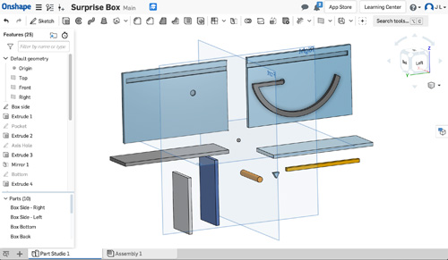
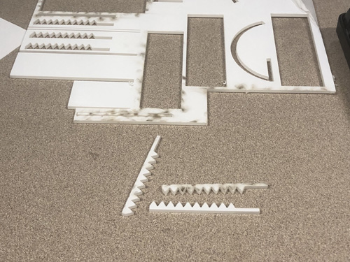

TL;DR
I built a toy from my infancy using techniques learned and materials used during this quarter... and it works.

Backstory
See the backstory in the previous assignment (A7: Final Project Proposal).
This was the original concept: 
SKETCHES
Since the design of the box and its mechanism seemed simple enough, I sketched some basic concepts before using more complex CAD software:

I started with a simple box that had a sliding door, and some sort of rotating internal mechanism connected to the position of sliding door.

Did a bit of math to calculate the size of the grooves for the sliding door.

Started ideating how to connect the sliding door to the rotating mechanism... maybe a rack and pinion? Sounds like it could work.

Another view of the rack and pinion component - from the top overlaying the sliding door and the gear connected to the rotating mecahnism.

At some point I also started thinking about the 3D printing setup -- I think the most efficient way to print this is vertically, so that the need for supports is minimized.
CAD DESIGN
After I had the initial sketches done-ish, I started designing the components in onshape

This was relatively straight forward because of all the dimensions I calculated previously in the sketches.
With a bunch of parts ready, I put them together in the Assembly section:

I did a couple of tweaks to adjust for the dimensions I didn't consider -- e.g. the width of the sliding door, which as shown in the image above, did not originally account for the grooves.

After a couple of tweaks on the components, the box fit together nicely.
I used an OnShape model to generate gears, and tweaked it to ensure the radius fit the space I had designed in the box:
I added the rotating components and played with the shapes to ensure they would properly accomodate the rotation.

Closed position.
Open position, with the max rotation allowed. In this position, the surprise would come near the unsuspecting user's fingers.

Added the first rack and pinion to connect with the rotating mechanism.

I also added an axis to the gear so that it would rotate in place, fitted inside a pocket in each side inside of the box.

This is a wireframe view of the rotating gear in place using the rack and pinion mechanism in the sliding door.
Another view of the internal mechanism, with the rotating arm outside for sizing reference.
MANUFACTURING
After designing the components, the three main manufacturing processes would be:
- 3D Print the gear for the rotating component
- Laser cut the box sides and a component of the rotating mechanism
- Mill the sides of the box for the pocket of the rotating mechanism and the grooves for the sliding cover
3D PRINTING
Given time constraints, I did most of the work at the Microsoft Garage marker space. It's a sweet space with laser cutters, 3D printers, an Othermill, and a bunch of other tools to build almost anything.
I started using a Flashforge Pro to print the gear with somewhat unsuccessful results:

Reminds me of the Ghostbusters' Psychomagnotheric Slime.
I turned to the Ultimaker 3, and after starting the print, I noticed some problems with the machine:

The machine was still operable, but needed careful observation to stop it in case the material leaked or if anything else behaved strange.
The printing completed after ~1h.
Settings:
- Layer height: 0.1
- Infill: 60%
- Supports: Yes, please.
After the parts were done, the results were noticeably different:
The quality Instagram content that my friends appreciate.
Laser Cutting
After the printing was done, I cut the parts
The settings of the Epilog laser cutter/engraver were:
- Power 100%
- Speed 20
These settings were based on some pre-set recommendations from other Microsoft Garage members.
Since I knew I would have limited access to the laser cutter, I cut a couple of different options for the following parts:
- Box sides -- in case I needed to mill extra parts if I did not mill it properly
- Sliding box covers -- from previous experience, the acrylic might melt slightly differently, and there was a possibility that the sliding cover might not fit properly
- Extra parts for the rotating mechanism in case I needed to cut the final version to adapt for any tight tolerances.

Sliding doors in a variety of widths -- from 3.1 cm to 3.4 cm.

Parts for the rack and pinion mechanism.
MILLING
I did a combination of milling in at UW and at the Microsoft Garage.
I struggled with Fusion 360 for a couple of hours, I had some usable machine paths that would work halfway in the Othermill, then send the milling end rotating endlessly without drilling the pockets.
Wtf are these paths? Credit to @nraynaud for the great toolpath simulator.
After exporting multiple machine paths, I realized my settings were not right for the Othermill because there is a specific setting for the Othermill:
This dropdown has an option to make the output GCODE for the Othermill, not some random .nc or .cps that the Othermill may or may not understand properly.
This was me at the Garage after realizing the above minute detail:
At some point, the milling happened:
FINAL ASSEMBLY
With a solid assortment of parts, I started to piece things together:

The box with the gear of the rotating mechanism.
Carefully (and lovingly) holding things together to ensure the parts fit.

For the scary surprise, I felt nothing could be more fitting for this project than the failed print that represents all the unexpected failures encountered in the process of making things - at least it made sense to me.
The scary surprise mechanism was glued to the gear so the whole thing would rotate together.
I really dig the translucent effect of the box - I think it makes it more likely for people to be curious about what's in the box.
Archetypical post-graduate student nearing the end of the quarter:
The parts ended up being slightly misaligned due to the Fusion 360 export issues and the milling challenges, but the mechanism worked pretty well nevertheless:
Rotating mechanism ready to rotate (and scare unsuspecting strangers).
I added the teeth on the lid, put it on and things worked pretty nicely.
THE FINAL COUNTD... ERR PRODUCT
LEARNINGS
Yes.
SOURCES
Internets and stuffs.
TAKEAWAYS (LEARNINGS)
- Superglue is amazing.
- Laser cutting is fast, and efficient
- Cutting extras in different sizes is helpful if the tolerances are less than perfect at build time. Also... ain't nobody got time to drive to the Mill everyday.
- Fusion 360 is torture - it is far from intuitive, and basic tasks are not easy to repeat (plus what's up with the lack of right-click navigation?).
- Sketching things thoroughly was extremely helpful - made subsequent activites easier... especially designing in CAD.
- Maker spaces need their users to keep things orderly... otherwise tools (e.g. end mills) will be easily misplaced.
- Documentation is boring, but it has helped me remember how to do certain things (e.g. use a mill).
SOURCES USED
SOURCE FILES
FOR INTERNET POINTS

Find this and other quality content on my Insta @malvenko.